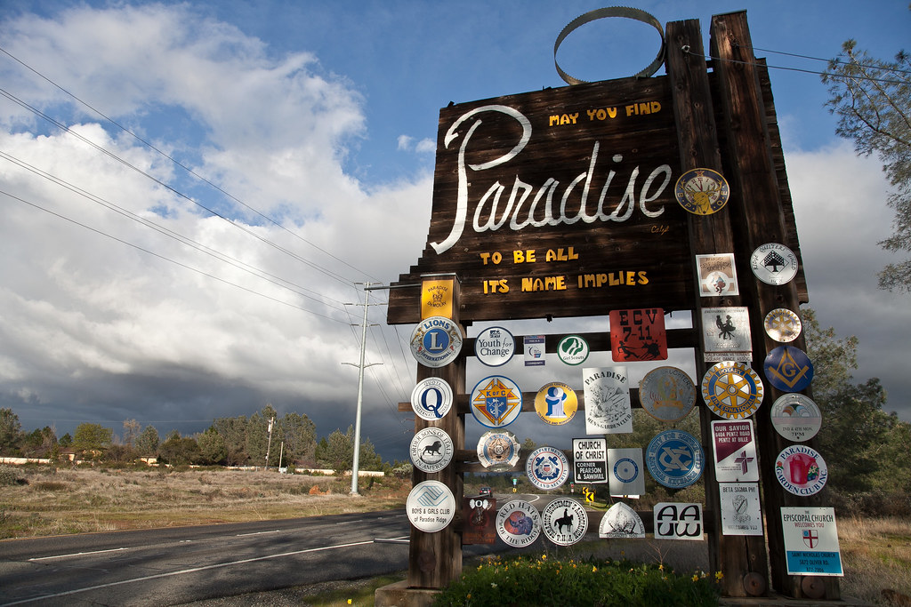
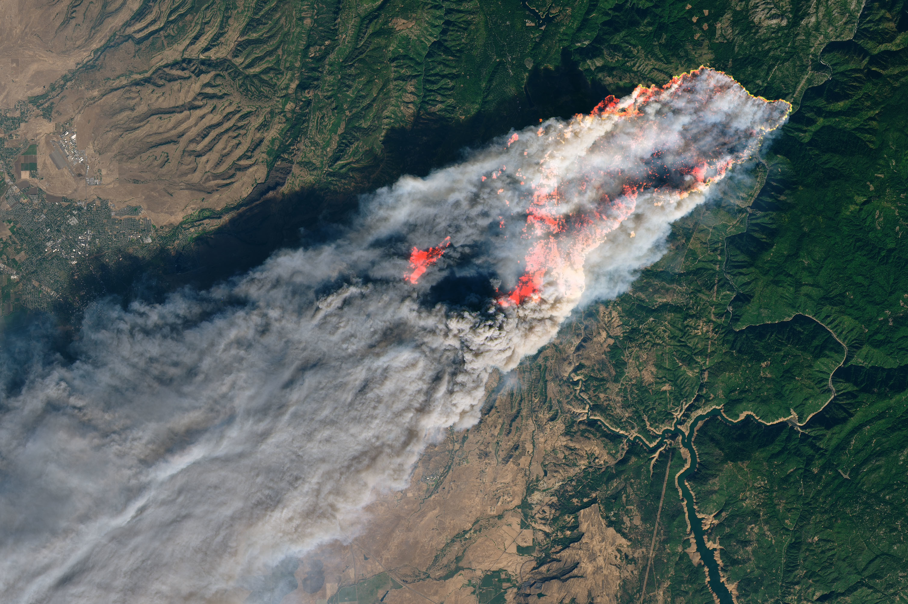
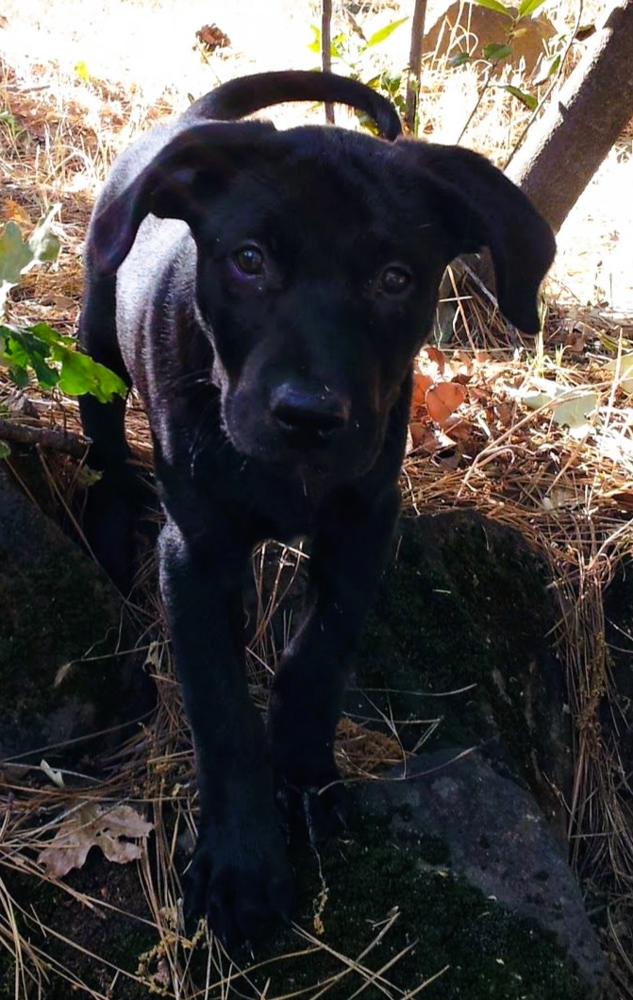
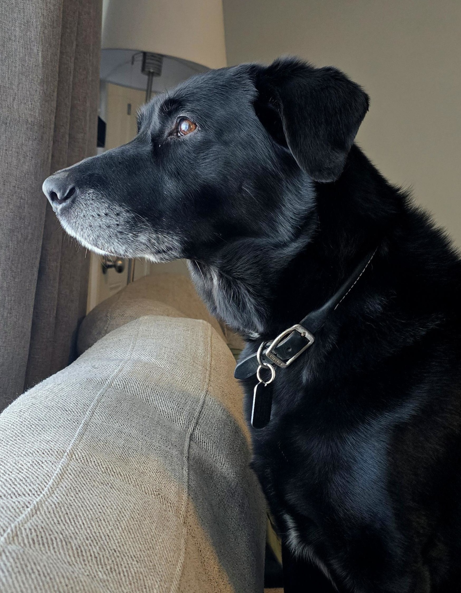
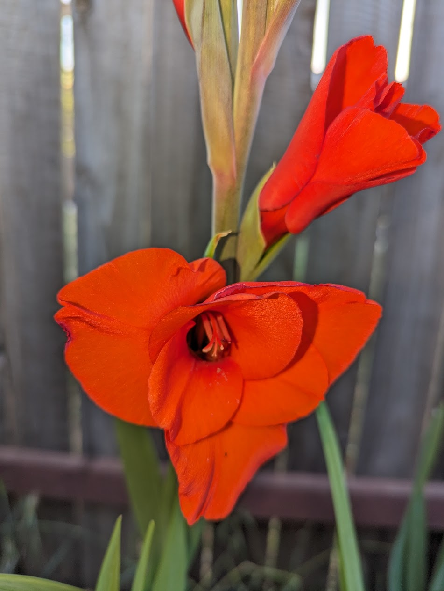
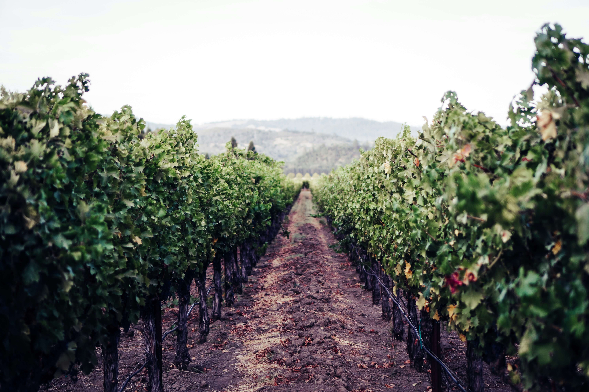

The work speaks for itself. But there's more to how I got here than four years of Atlassian administration. This page is the longer version.

I grew up in Paradise, a small mountain town in the Sierra Nevada foothills about 90 miles north of Sacramento. Most of my life happened there. It's where I got my first computer, found out I was good at math, and learned that I could pick up almost anything if I cared enough to try.
Getting into IT wasn't a straight line. I studied computer science and 3D graphics at CSU Chico, worked as a bank teller, spent several years as a financial services rep, then ended up at an e-commerce company doing data work. That's where things started to click.
The job I remember most from that stretch: everyone agreed you couldn't sell doors online. Too many configurations, too much for a buyer to sort through before committing. I spent weeks learning the category: the terminology, how doors are actually built, what someone buying one remotely actually needs to know. Then I built it out. Data standards, catalog guides, user-facing help content, and most of the graphics myself. After I left, it became one of the fastest-growing categories on the site.
That project stuck with me. If you understand a problem well enough, you can build something useful out of it. The domain doesn't matter much. The work is the same: figure it out, then build it right.
The night before had been rough. The wind was relentless, one of the worst I could remember in Paradise, and I'd barely slept. I almost called in sick that morning but decided to go anyway.
Driving down toward Chico I could already see a smoke plume to the east. It was large, but I kept going. By the time I'd stopped for coffee and breakfast in town, it had doubled in size and was pushing straight toward Paradise. I turned around and drove back up.
I had maybe 20 minutes at home. I grabbed what I thought I'd need if I ended up with nowhere to go: tent, sleeping bag, clothes, everything for Zeke and my cat. While I was still moving through the house, an alert came through on my phone to evacuate immediately. I got the animals in the car and left.
Driving out, it was pitch black at 9 in the morning. Ash fell like snow. Trees exploded. I could see flames across the canyon where my house was and I already knew it was gone. I called my renter's insurance from the car. The guy on the phone thought I was joking at first.
By evening, 95% of the town was gone. Eighty-five people didn't make it out. The house I'd been living in, my grandmother's old place, was gone. The pizza place where I had my first job was gone. What's strange is how much of my personal history actually survived: my parents' house, the schools I went to, the hospital where I was born. The town was devastated, but not all of it.
It pushed me out of something that had gotten too small. I ended up in Sacramento, which is where I've been since. I don't think I'd have left otherwise.

A few months after the fire, a former colleague pulled me into a new role at a wholesale buying organization. About a year in, he asked me to look at a Jira rollout that was a few months from launch. The requirements hadn't been defined properly and what was being built wasn't going to work. I said so. It turned into me taking the whole thing over and rebuilding from scratch.
I ended up as the sole Atlassian administrator for the next four years. Three hundred users, 20 departments, 55+ Jira projects, around 25 JSM service desks, over 100 automation rules. When something broke, it was my problem. When a department needed a service desk, I scoped it, built it, tested it, and trained the team. No handoffs, no backup.
I learned the platform mostly by doing. I used the official training, webinars, and documentation. But the real learning came from building for real people and seeing what actually worked. That's still how I learn best.
What I figured out in that role: I'm good at understanding what people actually need, which isn't always what they asked for. I'm good at building things that hold up over time. And there's real satisfaction in making someone's job easier, even when they never notice it happened.
I've been in Sacramento since 2019. I live here with my partner Drew and our 13-year-old lab mix Zeke. It's a good life. Quieter than it sounds from the outside.


Outside of work I watch a lot of fantasy and sci-fi. I'm drawn to stories where someone lands in an unfamiliar world and has to figure out how to belong there. My current favorite is Frieren: Beyond Journey's End. Star Trek has always been my sci-fi of choice. I also play games that let you build things: Fallout, Skyrim, Enshrouded, city builders. Anything with a good world to explore.


Drew and I spend a lot of time exploring California. The Russian River area around Guerneville and Healdsburg is somewhere we keep coming back to. We make it to Sonoma and Napa, San Francisco, and the coast regularly. The coast especially. Getting Zeke to the beach or onto a mountain trail is usually all we need for a good weekend. We like finding places in the Sierra Nevada we haven't been before, pulling off somewhere and seeing what's there. Good food and good wine are always part of it. I cook at home more than we go out.
I'm not the most outgoing person, but I've always gotten real satisfaction from making someone's work easier. It doesn't have to be noticed to feel worthwhile. Building something that quietly solves a problem for someone is the part of the job I keep coming back to.
I pick up new platforms fast, care about doing things right, and do my best work when the work actually matters. I'm looking for a team with real problems to solve and room to solve them well.
If that sounds like yours, I'd like to talk.